拍摄日期：2026-08-21
这次去荡口，主要是想试拍一下新买的饼干头——佳能 EF 40mm f/2.8 STM。
拍摄结果基本令我满意。之后，这枚镜头应该会经常挂在我的胶片机 EOS 50 上；这次用佳能 EOS 5D 测试，也很合适。5D 是一台约 1200 万像素的全画幅数码单反。它的成像风格，加上合适的曝光与后期处理，有时会让人联想到胶片的质感。不过，所谓的“胶片味”并不只由像素数量决定。
那天已是午后，阳光依然强烈。我边走边拍：有慵懒的猫咪，有逆光中的灯笼，也有强光落在墙面上形成的斑驳树影，以及阳光下格外醒目的日常静物。
整体来看，照片的色彩显得厚实，焦外过渡也比较自然。更重要的是，这枚镜头轻巧、便宜，实际表现却相当不错，是一支物有所值的选择。
ENGLISH
Dangkou Series 002
Date taken: August 21, 2026
The main reason for this visit to Dangkou was to try out my newly purchased pancake lens, the Canon EF 40mm f/2.8 STM.
I was quite pleased with the results. I expect this lens will spend a lot of time mounted on my Canon EOS 50 film camera. It also proved to be a good match for testing on the Canon EOS 5D. With its full-frame sensor and a resolution of around 12 megapixels, the 5D can produce images with a rendering that sometimes reminds people of film. Of course, that impression comes from more than pixel count alone; exposure, tonal response, and post-processing all play a part.
The afternoon sun was still intense, so I photographed as I wandered. There were cats resting on the old town’s stone pavement, lanterns glowing in backlight, mottled tree shadows falling across walls, and everyday objects made striking by the strong sunlight.
Overall, the images have rich colours and pleasantly natural background blur. Best of all, the lens is small, light, and inexpensive. For the price, it offers excellent value.
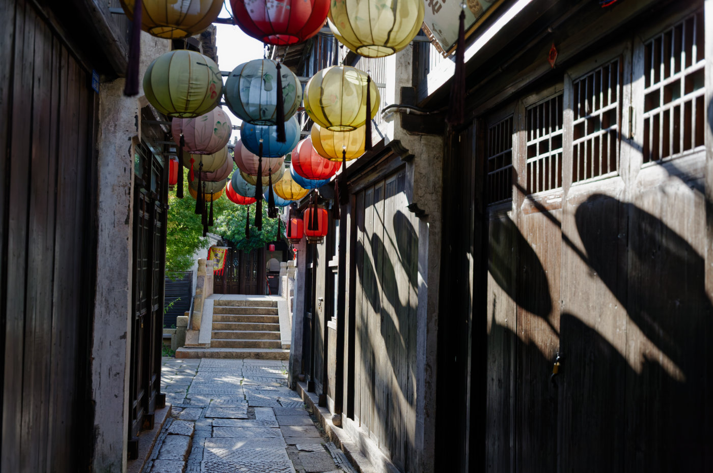
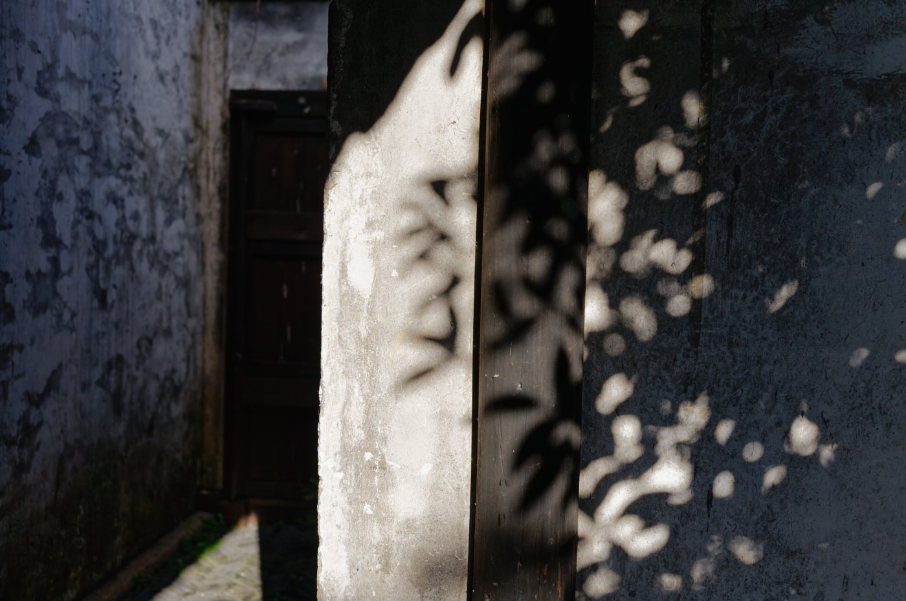
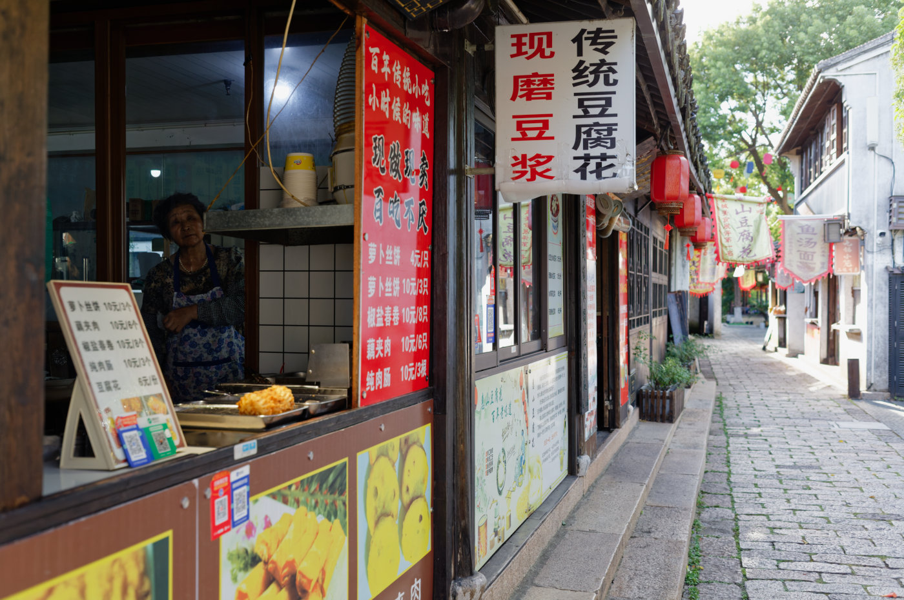
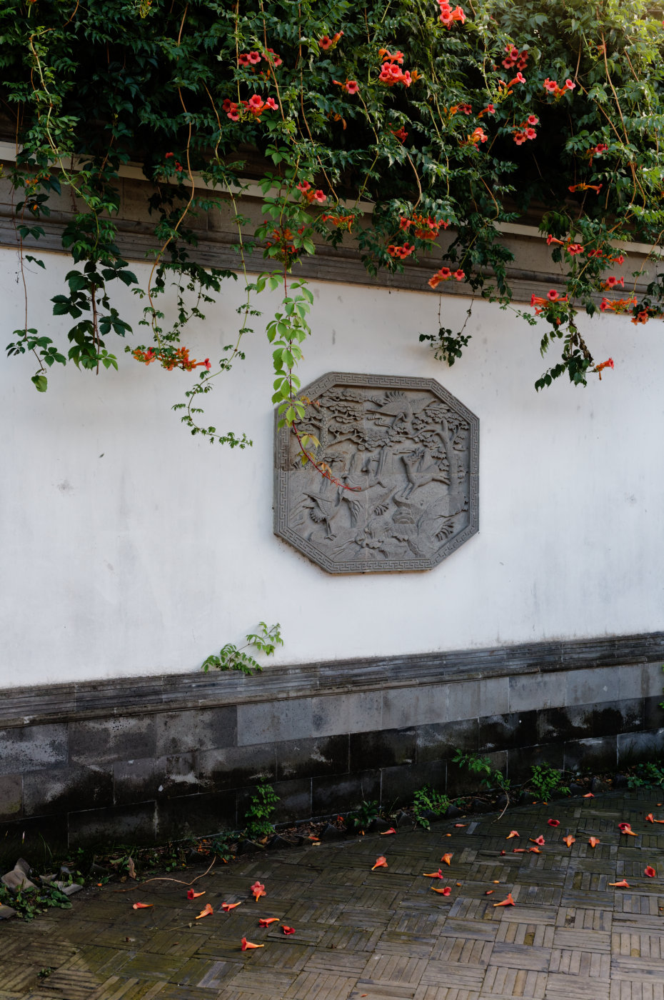
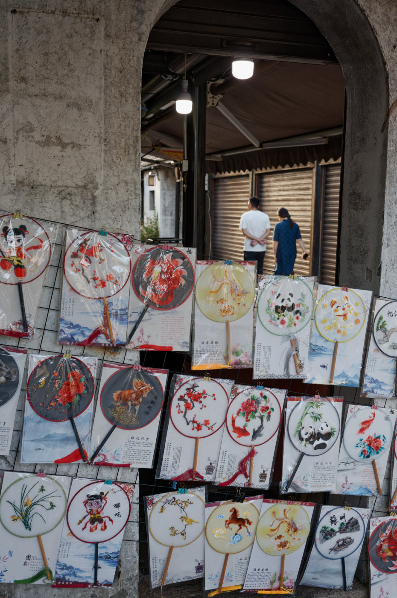
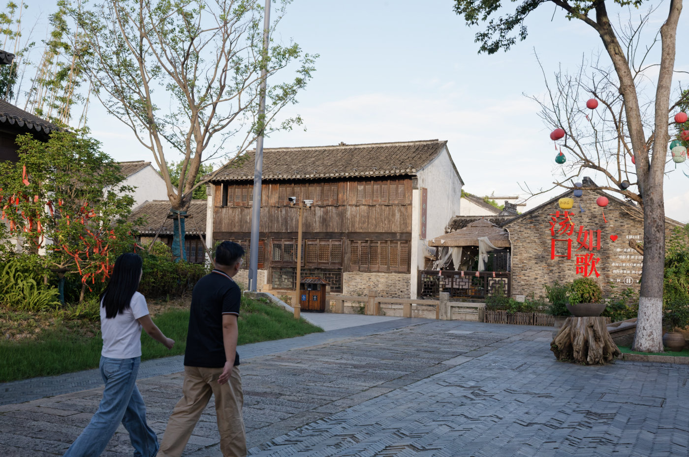
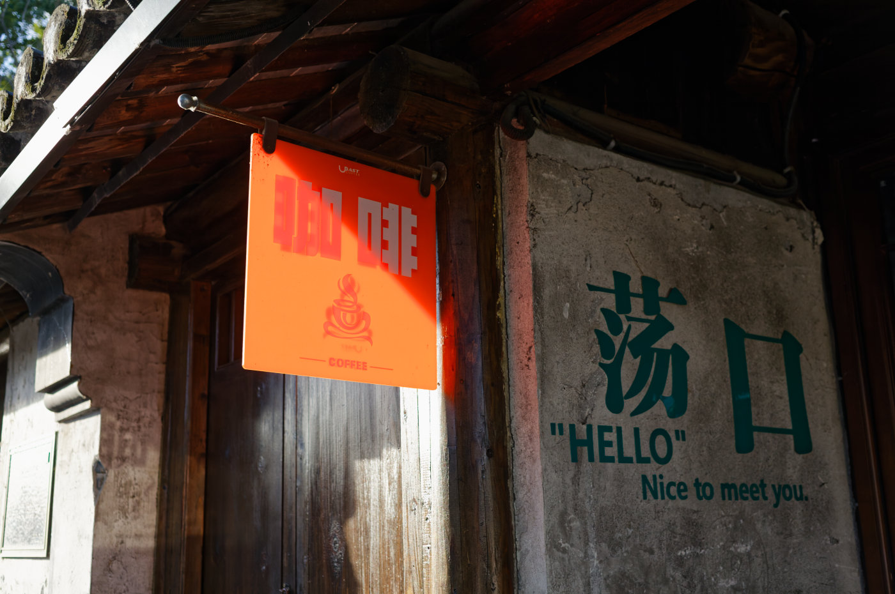
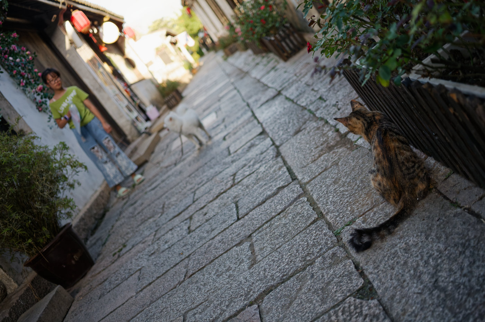
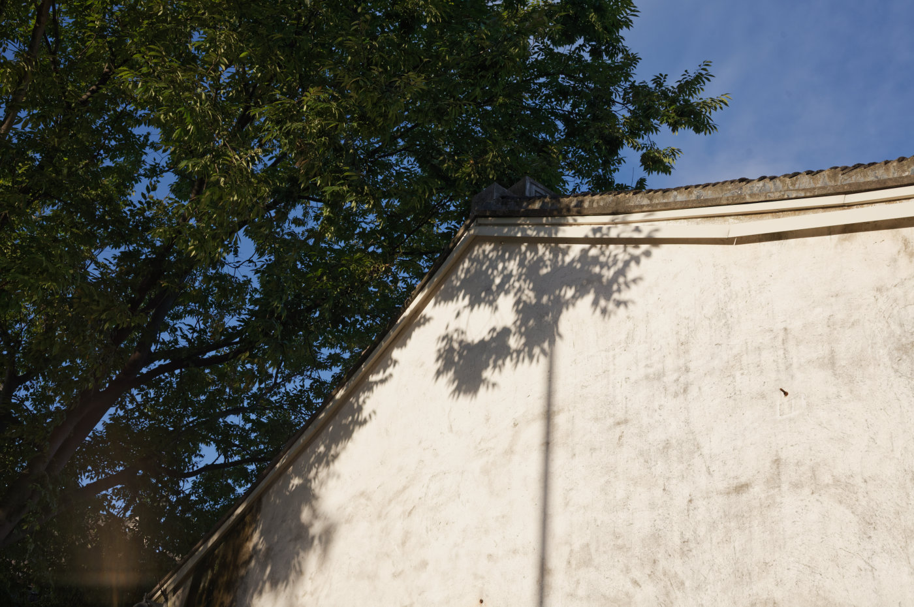
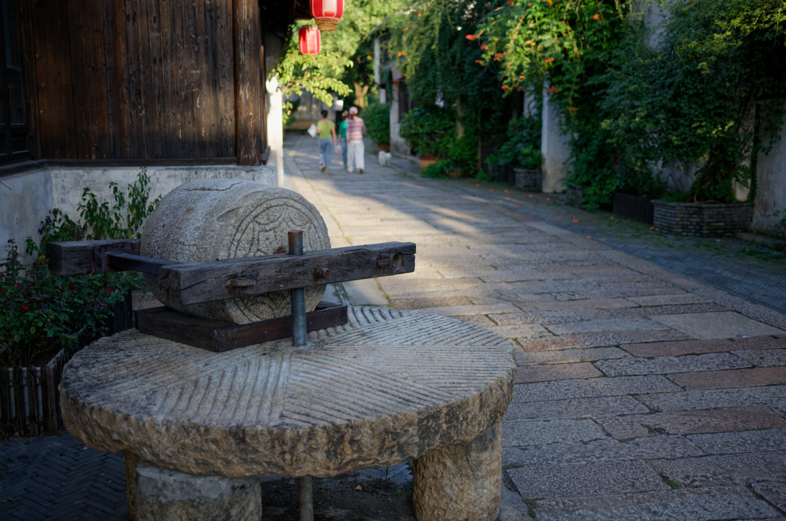
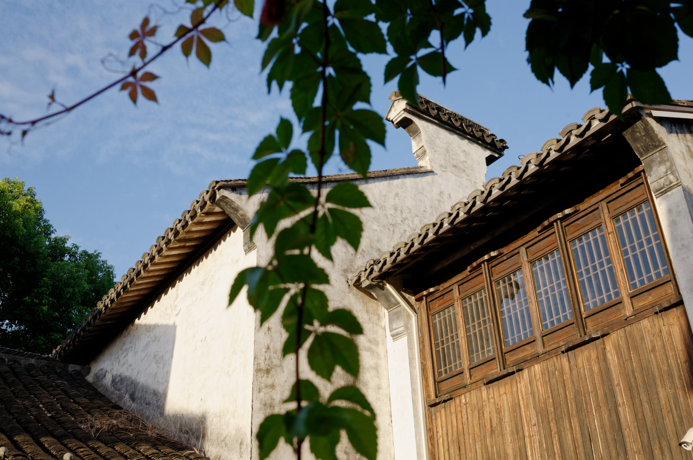